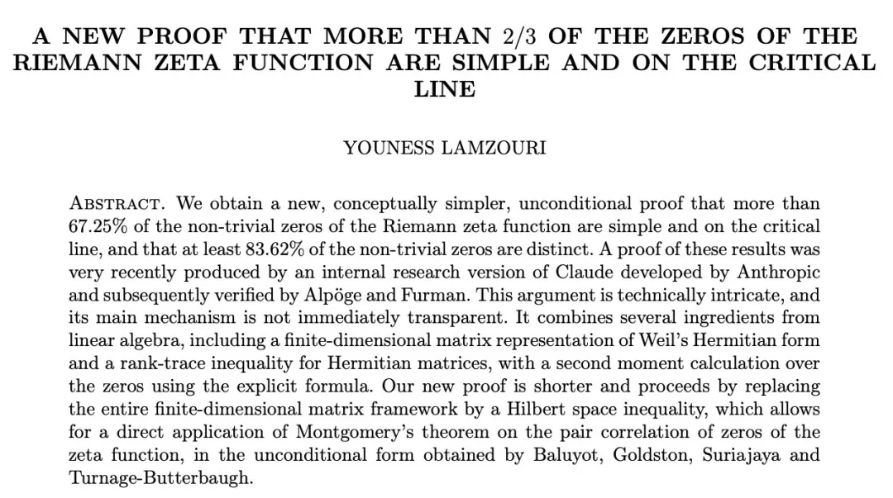
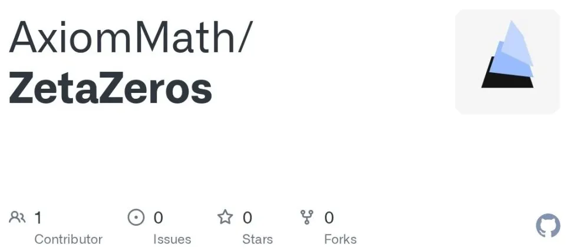
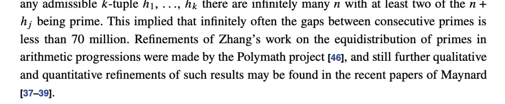
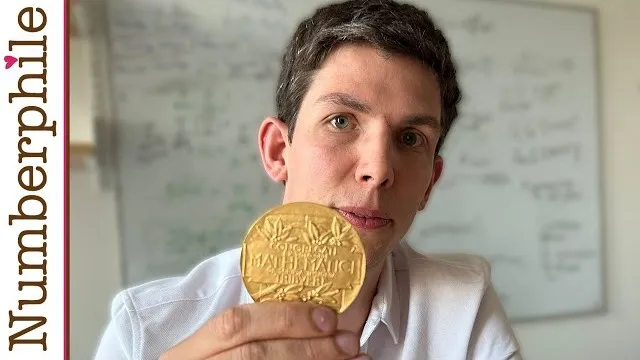

新智元报道
新智元报道

Claude在黎曼猜想（Riemann Hypothesis）上的相关证明，已被人类数学家彻底验证。
这次，数学家Youness Lamzouri宣布Claude的证明结果确凿无误，而且给出了一个更简洁更优雅更强的新证明。

论文：https://arxiv.org/pdf/2609.02882
回到上个月，当时Claude证明：超过2/3的zeta零点被确认位于临界线上且为单零点！
https://www-cdn.anthropic.com/95c246936988e43127bc6b2ceb7077c1dad2d68e.pdf
这个数字直接打破了黎曼猜想证明的记录——此前主流界限停留在41.6%左右，过去37年数学家只提高了0.8%。
而Anthropic的数学家使用内部的Claude直接提高了25.6%！
虽然没有彻底证明黎曼猜想，但这一成果足以引起数学界地震，Anthropic直接霸占头条。
可AI的证明晦涩难懂，难以领会，「主要机制并非一目了然」。
现在，数论学家Youness Lamzouri撰写了证明，非常简短、巧妙、优美，堪称非凡壮举。
而仅仅几个小时，AxiomProver就完成了这项工作的形式化。
这个时代真是激动人心！
这不仅是一场AI的暴力美学，更是一次人类智慧的绝地反击，最后由另一个AI（AxiomProver）一锤定音的「跨物种」协作神话。
Lean证书：https://github.com/AxiomMath/ZetaZeros
数学史的底层逻辑，在这一天，被彻底改写了。

黎曼猜想被尊为「数学界的圣杯」，为何？因为它以最纯粹的抽象，暗合了最深刻的宇宙现实。
首先，它是驯服「素数」的终极图纸。
素数在数轴上看似毫无规律、如幽灵般随机分布，却被黎曼天才般地与Zeta函数的零点相连。
若猜想成立，便证明了这混沌的表象之下，实则隐藏着极其完美的和谐交响。
其次，它是现代数学的「承重墙」。
如今有上千条高阶定理以「黎曼猜想成立」为前提，它若被证伪，半个解析数论大厦将瞬间化为废纸。
从数论、代数、几何到泛函分析，黎曼猜想真正具有里程碑意义的等价形式大约有30到50种，甚至寻找这种等价形式本身就是现代数学研究的一大热点。
牛津大学出版社已出版了3卷《黎曼猜想的等价形式》
出乎意料的是，它跨越了学科的边界。
物理学家惊骇地发现，这些纯数学零点的间距分布，竟与量子力学中重原子核的能级分布奇迹般一致！证明它，不仅是数学的胜利，更是人类触碰宇宙底层代码的终极一跃。
众所周知，黎曼猜想的核心，是探讨黎曼zeta函数的非平凡零点究竟在哪里。
在1859年，黎曼大胆猜测：所有的非平凡零点，全都整整齐齐地排在一条实部为1/2的「临界线」上。
证明100%在临界线上，就是破解了黎曼猜想。人类此前艰难地证明了有超过五分之二的零点在上面，然后，似乎就卡壳了。
直到AI下场。
最新研究中，Claude向这个世纪难题发起了冲锋。
AI不懂什么叫「灵光一闪」，它信奉的是「大力出奇迹」。
Claude生生用一堆随着N(T)增长的巨大矩阵，硬算出矩阵的迹和Hilbert–Schmidt范数，最后靠着一套复杂的秩-迹不等式，卡住了零点的下界，硬是将边界推高到了67.25%！
该结果也得到了数学家Alpöge和Furman的初步验证。
结果一出，天下哗然。人类距离彻底击败黎曼猜想，只剩下最后的32.75%！
但当人类数学家拿到AI的证明过程时，全都沉默了。
这份证明太丑了。或者说，太「非人」了。
通过穷举、拼接，Claude把两个在人类直觉里「八竿子打不着」的数学工具，强行拼在了一起。
里面充斥着海量的复杂工具、晦涩的矩阵变换。它就像一台横冲直撞的推土机，在没有路的热带雨林里，生生碾压出了一条血路。
这条路能走通吗？能。这条路好走吗？连顶级数学家看了都头疼。
正如菲尔兹奖得主、被誉为「当今最聪明大脑」的陶哲轩曾经精准吐槽过的那样：
这类AI的证明，极其晦涩难懂，人类需要花大量的时间去「消化」它。
AI给了人类答案，却没给人类「理解」。
难道未来的数学，就是一台无情的计算机器输出一堆人类看不懂的真理吗？
人类数学家，绝不认输。
就在Claude的暴力证明让学界痛苦「消化」之时，数学家Youness Lamzouri站了出来。
直觉告诉他：这不对，真理不该是这副臃肿的模样。既然AI证明了这个方向是对的，那就一定存在一条更美的捷径！
接下来，Youness展现了什么叫做真正的「人类智慧」。
他挥起奥卡姆剃刀，大刀阔斧地砍掉了Claude证明中那些冗余、繁杂、随时间增长的巨大矩阵。
他用一条极其简洁、优雅的希尔伯特空间不等式，直接完成了对问题的归约！
复杂的下界问题，精妙地转化为对关联和的估计，然后直接套用了无条件版本的Montgomery定理（BGST）。
刷刷几笔，云淡风轻。
同样是证明「>67%的零点在临界线上」，如果说Claude的证明是暴力美学的蒸汽机怪兽；那么Youness的证明，就是一把浑然天成、吹毛断发的绝世好剑。
Axiom团队在社交媒体上毫不吝啬地赞叹：
Lamzouri重新证明了同一结果，用一条优雅的希尔伯特空间不等式取代了大量复杂工具。一份简洁明快的证明，尽显品味与人类智慧。
请注意这个词：品味。
AI可以在650个失败的想法中撞出一条路，但只有人类，能凭借对数学结构的天然审美，把这条泥泞的小路，拉直、铺平，变成一条壮阔的高速公路。
如果你以为故事到这里，就是「人类战胜AI」的俗套老梗，那就大错特错了。
高潮，才刚刚开始。
按照传统数学界的规矩，Youness写出了这篇极其优雅的论文，接下来应该怎么办？
找几个顶尖的同行，开研讨会，花上几个月甚至几年的时间，一行一行地去审查、验算。
毕竟，这可是黎曼猜想啊！当年望月新一证明ABC猜想，因为证明太复杂，数学界吵了快十年也没完全达成共识。
但这一次，时代变了。
就在Youness把预印本草稿分享出来后的短短几个小时内！注意，是几个小时！
AI工具AxiomProver自动出击，直接在形式化验证语言Lean中，将Youness的这份证明完全自动形式化，并完成了机器级无缝核实！

https://github.com/AxiomMath/ZetaZeros
这意味，当吃瓜群众刚看到论文标题，还没搞懂希尔伯特空间是什么的时候，机器已经冷酷无情地把整个证明的逻辑链条从头到尾扒了个底朝天，一锤定音。
在人类历史上，一项关于黎曼猜想这种史诗级难题的重大突破，在论文发布的「第一天」，就实现了机器验证！
Axiom团队难掩激动之情：
我们坚信，用机器的形式化验证同步伴随前沿数学的新突破，将是不可避免的未来。
不到24小时，Axiom团队宣布在孪生素数猜想上有近了一步：
存在无穷多对素数，它们之间的间隔不超过212。
孪生素数猜想，是说有无穷多对素数相差为2。
几个世纪以来，世人一直不知道是否存在无穷多对素数，其差值是一个有限值。
2014年，张益唐、James Maynard、陶哲轩以及Polymath项目取得了历史性突破，将这一差值缩小到246。

凭借相关贡献，James Maynard获得了菲尔兹奖。

到了今年8月31日，数学家Julia Stadlmann将这一差值缩小到240。
https://arxiv.org/pdf/2608.31126
9月3日，数论专家、应用数学家和工程师，以及AxiomProver在Julia Stadlmann的工作基础上，通过在大型分布式集群上进行大量实验，取得了212的成果。
他们表示人类的梦想和证明之间的距离，可以仅仅是几个小时，而不是几辈子。
目前，草稿已公布，最终版本和Lean形式化证明承诺发布到arXiv上。
论文：https://primegaps.axiommath.ai/bgp212.pdf
而几个小时后，OpenAI用最新模型Astra用新方法被这个数字缩小到186。
更让人震惊的是，费马大定理也被Claude彻底形式化。
这才是这场大事件中最让人头皮发麻的地方：
传统数学那种「提出猜想——证明——漫长的人工同行评审——确认」的低效古典时代，在今天，正式宣告终结。
今天，我们可以开香槟庆祝了。
超过67%的zeta零点被死死钉在了那条神奇的临界线上。黎曼在167年前随手画下的那条线，正在被人类与机器联手，一寸一寸地点亮。
但别忘了，这场跨越百年的征途并未结束。
黎曼猜想，还有最后那如同暗物质般神秘的32.75%。
参考资料：
编辑：大卫